田沢湖大観音/秋田県田沢湖町
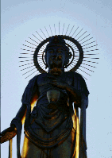 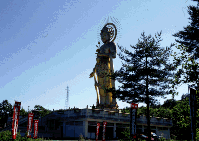 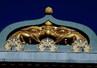
雲ひとつない高原特有の真っ青な空、眩しい位の緑、小鳥のさえずりしか聞こえない樺の並木道。自然の空気が実に気持ちがいい。気分爽快である、この道の先にあるのが金色大観音でさえなければ。
この田沢湖金色大観音、経営者は某ホテルグループ。ま、田沢湖って観光スポット少ないし、いっちょ何か作ったろか、ってなノリだったのだろう。境内の雰囲気もバブリーなのだが、その辺は後程。
境内の様子は金色の変な顔したインド風の仁王門、その先に四国八十八ケ所お砂踏み霊場のある建物、池のある庭園の真ん中を貫く参道、そしてその正面に件の大観音、という一直線上の伽藍配置。昔、歴史の授業で習った四天王寺の伽藍配置を思い出す。もっともここは門と大観音だけで本堂すらもないが。
で、大観音である。金色大観世音菩薩の名の通り全身金色である。高さ35メートル「鋳造製の観音さまとしては」、というやけに細かい但し書きのつく「高さ日本一」の観音様である。
いくら日本一とはいえ35メートル。内部に入って胎内めぐり、と言う訳にはいかない。そのかわり、お楽しみは台座下に隠されている。
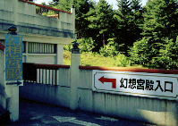
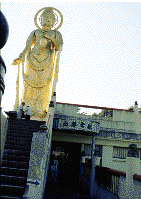
大観音への階段の横に小さな入口があり、「幻想宮殿」とだけ書かれた看板がかかっている。何か地下の会員制秘密クラブでもあるかのような怪し気な雰囲気。
その扉を開けると、左手の壁に御来迎幻想というタイトルがついた窓がある。窓の向こうは暗くて良く見えないのだが、近付いてみると・・・ジャーン！と、いかにも宗教っぽい音楽（宗次郎？）が流れ、窓の向こうが明るくなった。そこには何とスモークに炊かれた金ピカの釈迦像がいるではないか。来る客をセンサーで感知し、お釈迦様自信がいきなり「いらっしゃいませ」てな感じで迎えてくれるという趣向なのだ。そのピンクにライトアップされたスモーク、良く見ればただの水蒸気で、お釈迦様もずぶ濡れ、丁度恰幅の良いオッさんがミストサウナに入ってるみたいでした。
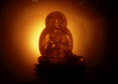
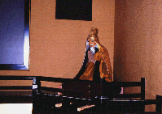
で、真っ黒い自動ドアがあくと次の部屋の三十三観音堂。後ろの自動ドアが音もなく閉まると部屋の中で私を待ち受けるのは額縁型のモニターの横に座っている爺さんの人形。なんか燃えよドラゴンのハンの要塞島みたいになってきたなあ、などと思いながら一体何が始まるのか、思わず身構える・・・1分経過、相手は空ろな目で何か考えている様だ。・・・2分、相手はまだ動かない、こちらの動くのを待っているのか・・・3分経過、センサーが故障中ということが判明。不戦勝か。次の部屋に進む。
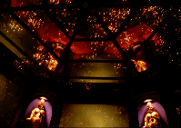
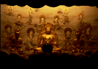
次の部屋はここのメインスペース「曼茶羅宮」。円形の部屋をぐるりと囲むのは8面のスクリーンとその間に配された壷の置かれた棚。真っ暗な部屋だが、ここもセンサー仕掛けで起動するようになっており、ゴージャスなスライドショーが始まる。いつの間にか壷の置かれている棚が回転して金色の観音像に囲まれている。8面のスクリーンからは様々な映像が現れ、仏陀への賛美と怪しい音楽が流れる。天井が鏡になっており床の星座のような明かりを写し込み、まさに光と音の映像ハイテク曼陀羅宮。クラクラしてくる。このへん完全にバブリ−。ま、綺麗は綺麗なんだけどショーが一通り終わり、また真っ暗な部屋に戻ると結構空しい。
そのあとは浄土三尊の図を経由し、本尊の観音様と千躰仏が並ぶ部屋を抜けるとこの怪しい幻想宮殿ツアーもお終い。出口の土産物屋はやる気がなく、ここの人の入りの少なさを物語っている。売られてる饅頭とか賞味期限大丈夫なんだろうな。
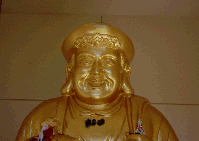 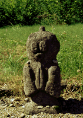
1998.7
珍寺大道場 HOME